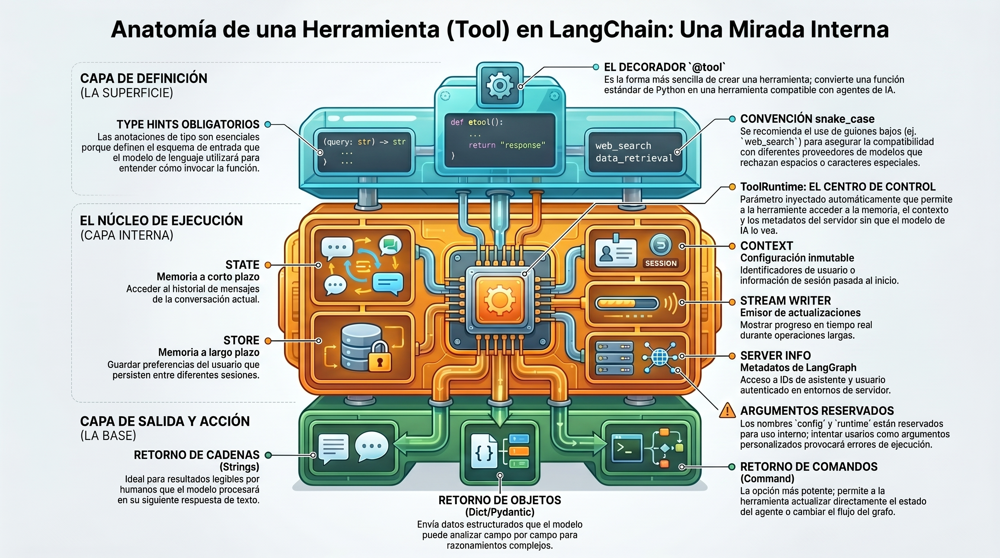

7. Introducción a las Tools.#
Las Tools (herramientas) extienden las capacidades de los agentes de LangChain, permitiéndoles:
Obtener datos en tiempo real
Ejecutar código
Consultar bases de datos externas
Tomar acciones en el mundo real
Internamente, las tools son funciones invocables con entradas y salidas bien definidas que se pasan a un modelo de lenguaje (LLM). El modelo decide cuándo invocar una tool y qué argumentos proporcionarle, basándose en el contexto de la conversación.

7.1. Crear Tools#
7.1.1. Definición básica con @tool#
La forma más sencilla de crear una tool es usando el decorador @tool. Por defecto, el docstring de la función se convierte en la descripción de la tool.
⚠️ Los type hints son obligatorios: definen el esquema de entrada de la tool.
from langchain.tools import tool
@tool
def search_database(query: str, limit: int = 10) -> str:
"""Busca registros en la base de datos de clientes que coincidan con la consulta.
Args:
query: Términos de búsqueda
limit: Número máximo de resultados a devolver
"""
return f"Se encontraron {limit} resultados para '{query}'"
# Probamos la tool directamente
print(search_database.invoke({"query": "clientes premium", "limit": 5}))
7.1.2. Personalizar el nombre de la Tool#
Por defecto, el nombre de la tool se toma del nombre de la función. Puedes sobreescribirlo:
from langchain.tools import tool
@tool("web_search") # Nombre personalizado
def search(query: str) -> str:
"""Busca información en la web."""
return f"Resultados para: {query}"
print(search.name) # → web_search
print(search.description)
7.1.3. Personalizar la descripción#
Puedes proporcionar una descripción explícita en lugar de usar el docstring:
from langchain.tools import tool
@tool(
"calculator",
description="Realiza cálculos aritméticos. Úsala para cualquier problema matemático."
)
def calc(expression: str) -> str:
"""Evalúa expresiones matemáticas."""
return str(eval(expression))
# El modelo verá la description personalizada, no el docstring
print(calc.invoke({"expression": "3 * (4 + 2)"}))
7.1.4. Esquema avanzado con Pydantic#
Para inputs complejos, usa modelos Pydantic para definir el esquema con mayor detalle y validación:
from pydantic import BaseModel, Field
from typing import Literal
from langchain.tools import tool
class WeatherInput(BaseModel):
"""Input para consultas del tiempo."""
location: str = Field(description="Nombre de la ciudad o coordenadas")
units: Literal["celsius", "fahrenheit"] = Field(
default="celsius",
description="Unidad de temperatura preferida"
)
include_forecast: bool = Field(
default=False,
description="Incluir previsión de 5 días"
)
@tool(args_schema=WeatherInput)
def get_weather(location: str, units: str = "celsius", include_forecast: bool = False) -> str:
"""Obtiene el tiempo actual y, opcionalmente, la previsión."""
temp = 22 if units == "celsius" else 72
result = f"Tiempo en {location}: {temp}°{units[0].upper()}"
if include_forecast:
result += "\nPróximos 5 días: Soleado"
return result
# Llamada con validación Pydantic
print(get_weather.invoke({
"location": "Madrid",
"units": "celsius",
"include_forecast": True
}))
7.2. Acceso al Contexto en Tiempo de Ejecución: ToolRuntime#
Las tools pueden acceder a información de ejecución mediante el parámetro especial ToolRuntime. Este parámetro es invisible para el LLM (no aparece en el esquema de la tool).
Componente |
Descripción |
Caso de uso |
|---|---|---|
|
Memoria a corto plazo (conversación actual) |
Historial de mensajes, contadores |
|
Configuración inmutable en tiempo de invocación |
User ID, sesión |
|
Memoria a largo plazo (persiste entre sesiones) |
Preferencias de usuario |
|
Emitir actualizaciones en tiempo real |
Feedback de operaciones largas |
|
Info del hilo y ejecución actual |
Thread ID, Run ID, reintentos |
|
ID único de la invocación actual |
Correlación de logs |
7.2.1. 2.1 Acceder al State (memoria a corto plazo)#
from langchain.tools import tool, ToolRuntime
from langchain_core.messages import HumanMessage
@tool
def get_last_user_message(runtime: ToolRuntime) -> str:
"""Obtiene el mensaje más reciente del usuario en la conversación."""
messages = runtime.state["messages"]
for message in reversed(messages):
if isinstance(message, HumanMessage):
return message.content
return "No se encontraron mensajes del usuario"
# Acceder a campos personalizados del estado
@tool
def get_user_preference(pref_name: str, runtime: ToolRuntime) -> str:
"""Obtiene el valor de una preferencia de usuario."""
preferences = runtime.state.get("user_preferences", {})
return preferences.get(pref_name, "No establecido")
# Nota: 'runtime' está oculto al modelo → el LLM solo ve 'pref_name'
7.2.2. Actualizar el State con Command#
Usa Command para que una tool actualice el estado del agente:
from langgraph.types import Command
from langchain.tools import tool
@tool
def set_user_name(new_name: str) -> Command:
"""Establece el nombre del usuario en el estado de la conversación."""
return Command(update={"user_name": new_name})
7.2.3. Context (configuración inmutable)#
El context proporciona datos de configuración pasados en tiempo de invocación. Ideal para User IDs, sesiones, etc.:
from dataclasses import dataclass
from langchain.tools import tool, ToolRuntime
USER_DATABASE = {
"user123": {"name": "Ana García", "account_type": "Premium", "balance": 5000},
"user456": {"name": "Luis Martínez", "account_type": "Estándar", "balance": 1200}
}
@dataclass
class UserContext:
user_id: str
@tool
def get_account_info(runtime: ToolRuntime) -> str:
"""Obtiene la información de cuenta del usuario actual."""
user_id = runtime.context.user_id # Inyectado automáticamente
if user_id in USER_DATABASE:
user = USER_DATABASE[user_id]
return (
f"Titular: {user['name']}\n"
f"Tipo: {user['account_type']}\n"
f"Saldo: €{user['balance']}"
)
return "Usuario no encontrado"
# Al invocar el agente, se pasa el contexto:
# agent.invoke({"messages": [...]}, context=UserContext(user_id="user123"))
7.2.4. Long-term Memory con Store#
El Store proporciona almacenamiento persistente entre sesiones. Usa un patrón namespace/key:
from typing import Any
from langgraph.store.memory import InMemoryStore
from langchain.tools import tool, ToolRuntime
# Tool para leer de la memoria
@tool
def get_user_info(user_id: str, runtime: ToolRuntime) -> str:
"""Busca información de un usuario en la memoria persistente."""
store = runtime.store
user_info = store.get(("users",), user_id)
return str(user_info.value) if user_info else "Usuario desconocido"
# Tool para escribir en la memoria
@tool
def save_user_info(user_id: str, user_info: dict[str, Any], runtime: ToolRuntime) -> str:
"""Guarda información de un usuario en la memoria persistente."""
store = runtime.store
store.put(("users",), user_id, user_info)
return "Información guardada correctamente."
# El store persiste entre invocaciones del agente:
store = InMemoryStore() # En producción: PostgresStore
# agent = create_agent(model, tools=[get_user_info, save_user_info], store=store)
7.2.5. Stream Writer (actualizaciones en tiempo real)#
Emite actualizaciones progresivas durante la ejecución de una tool larga:
from langchain.tools import tool, ToolRuntime
@tool
def analyze_document(filename: str, runtime: ToolRuntime) -> str:
"""Analiza un documento extenso."""
writer = runtime.stream_writer
writer(f"📄 Cargando documento: {filename}")
# ... procesamiento ...
writer(f"🔍 Analizando contenido...")
# ... más procesamiento ...
writer(f"✅ Análisis completado")
return f"Análisis de '{filename}' finalizado."
⚠️
runtime.stream_writersolo funciona dentro de un contexto de ejecución LangGraph.
7.3. ToolNode: Ejecución de Tools en Grafos#
ToolNode es un nodo precompilado de LangGraph que gestiona automáticamente la ejecución paralela, el manejo de errores y la inyección de estado.
7.3.1. Uso básico#
from langchain.tools import tool
from langgraph.prebuilt import ToolNode
from langgraph.graph import StateGraph, MessagesState, START, END
@tool
def search(query: str) -> str:
"""Busca información."""
return f"Resultados para: {query}"
@tool
def calculator(expression: str) -> str:
"""Evalúa una expresión matemática."""
return str(eval(expression))
# Crear el ToolNode con las tools
tool_node = ToolNode([search, calculator])
print("Tools disponibles:", [t.name for t in [search, calculator]])
7.3.2. Tipos de valores de retorno#
7.3.2.1. ✅ Retornar string (texto plano)#
@tool
def get_weather(city: str) -> str:
"""Obtiene el tiempo para una ciudad."""
return f"Actualmente está soleado en {city}."
# El resultado se convierte en un ToolMessage que el modelo puede leer
7.3.2.2. ✅ Retornar un objeto (datos estructurados)#
@tool
def get_weather_data(city: str) -> dict:
"""Obtiene datos del tiempo estructurados para una ciudad."""
return {
"city": city,
"temperature_c": 22,
"conditions": "soleado",
}
# El modelo puede razonar sobre campos específicos del dict
7.3.2.3. ✅ Retornar Command (actualizar estado)#
from langchain_core.messages import ToolMessage
from langchain.tools import ToolRuntime, tool
from langgraph.types import Command
@tool
def set_language(language: str, runtime: ToolRuntime) -> Command:
"""Establece el idioma preferido de respuesta."""
return Command(
update={
"preferred_language": language,
"messages": [
ToolMessage(
content=f"Idioma establecido a: {language}.",
tool_call_id=runtime.tool_call_id,
)
],
}
)
7.3.3. Manejo de errores en ToolNode#
from langgraph.prebuilt import ToolNode
tools = [search, calculator]
# Comportamiento por defecto: captura errores de invocación
tool_node_default = ToolNode(tools)
# Captura todos los errores y envía mensaje al LLM
tool_node_catch_all = ToolNode(tools, handle_tool_errors=True)
# Mensaje de error personalizado
tool_node_custom_msg = ToolNode(
tools,
handle_tool_errors="Algo salió mal, por favor inténtalo de nuevo."
)
# Handler de error personalizado
def handle_error(e: ValueError) -> str:
return f"Input inválido: {e}"
tool_node_custom_handler = ToolNode(tools, handle_tool_errors=handle_error)
# Solo captura tipos de excepción específicos
tool_node_specific = ToolNode(tools, handle_tool_errors=(ValueError, TypeError))
7.3.4. Enrutamiento condicional con tools_condition#
tools_condition dirige el flujo del grafo: si el LLM hizo tool calls → va al nodo “tools”; si no → termina.
from langgraph.prebuilt import ToolNode, tools_condition
from langgraph.graph import StateGraph, MessagesState, START, END
from langchain_openai import ChatOpenAI
model = ChatOpenAI(model="gpt-4o-mini")
tools = [search, calculator]
model_with_tools = model.bind_tools(tools)
def call_llm(state: MessagesState):
response = model_with_tools.invoke(state["messages"])
return {"messages": [response]}
# Construcción del grafo
builder = StateGraph(MessagesState)
builder.add_node("llm", call_llm)
builder.add_node("tools", ToolNode(tools))
builder.add_edge(START, "llm")
builder.add_conditional_edges("llm", tools_condition) # → "tools" o END
builder.add_edge("tools", "llm")
graph = builder.compile()
# Ejemplo de ejecución
result = graph.invoke({"messages": [{"role": "user", "content": "¿Cuánto es 15 * 8?"}]})
print(result["messages"][-1].content)
7.4. Tools Precompiladas de LangChain#
LangChain incluye una amplia colección de tools listas para usar. Ejemplos:
# Instalación (ejecutar en terminal):
# pip install langchain-community
from langchain_community.tools import DuckDuckGoSearchRun
from langchain_community.tools import WikipediaQueryRun
from langchain_community.utilities import WikipediaAPIWrapper
# Tool de búsqueda web
search_tool = DuckDuckGoSearchRun()
# Tool de Wikipedia
wiki_tool = WikipediaQueryRun(api_wrapper=WikipediaAPIWrapper())
# Ver descripción que el LLM recibirá
print("Search Tool:", search_tool.name)
print("Wikipedia Tool:", wiki_tool.name)
# Úsalas directamente con un agente:
# agent = create_agent(model, tools=[search_tool, wiki_tool])
7.5. Resumen: Arquitectura de una Tool#
from IPython.display import HTML
diagrama = """
<pre style="font-family: monospace; font-size: 13px; line-height: 1.5; background: #1e1e1e; color: #d4d4d4; padding: 20px; border-radius: 8px;">
┌─────────────────────────────────────────────────────┐
│ AGENTE (LLM) │
│ │
│ 1. Recibe la consulta del usuario │
│ 2. Decide qué tool invocar (y con qué args) │
│ 3. Recibe el resultado de la tool │
│ 4. Genera la respuesta final │
└────────────────────┬────────────────────────────────┘
│ invoca
▼
┌─────────────────────────────────────────────────────┐
│ TOOL (@tool) │
│ │
│ - Nombre (tool name) │
│ - Descripción (para el LLM) │
│ - Esquema de inputs (type hints / Pydantic) │
│ - Lógica de ejecución (función Python) │
│ - Acceso opcional a ToolRuntime │
│ ├── state (memoria conversación) │
│ ├── context (config inmutable) │
│ ├── store (memoria persistente) │
│ └── stream_writer (actualizaciones) │
└─────────────────────────────────────────────────────┘
</pre>
"""
HTML(diagrama)
7.6. ToolRuntime en LangGraph — Guía Detallada#
7.6.1. ¿Qué es ToolRuntime?#
ToolRuntime es una clase de LangGraph (en langgraph.prebuilt) que agrupa información de ejecución y se inyecta automáticamente en las herramientas (tools) cuando estas se ejecutan dentro de un grafo.
Es una subclase de Runtime (de langgraph.runtime), pero diseñada específicamente para tools. Comparte los atributos generales del runtime (context, store, stream_writer) y añade atributos propios de la ejecución de herramientas: config, state y tool_call_id.
El LLM nunca ve el parámetro runtime — está completamente oculto del esquema de la herramienta.
7.6.2. Jerarquía de clases#
Runtime (langgraph.runtime)
│ ├── context
│ ├── store
│ ├── stream_writer
│ └── previous
│
└── ToolRuntime (langgraph.prebuilt) ← subclase
├── Todo lo de Runtime, más:
├── state ← estado actual del grafo
├── config ← RunnableConfig de la ejecución
├── tool_call_id ← ID único de la llamada
└── server_info ← metadatos del servidor (LangGraph Server)
7.6.3. Atributos completos de ToolRuntime#
Atributo |
Tipo |
Descripción |
|---|---|---|
|
|
Estado actual del grafo en el momento de la ejecución |
|
|
Datos estáticos pasados al invocar el agente (user_id, config, etc.) |
|
|
Configuración de ejecución de LangChain |
|
|
Acceso a memoria persistente entre sesiones |
|
|
Función para emitir actualizaciones por streaming custom |
|
|
ID único de esta llamada a la herramienta |
|
|
Metadatos del servidor (assistant_id, graph_id, user). Solo disponible en LangGraph Server |
7.7. Import correcto#
# Python — desde langgraph.prebuilt (recomendado)
from langgraph.prebuilt import ToolRuntime
# También disponible via langchain.tools (alto nivel)
from langchain.tools import ToolRuntime, tool
// JavaScript/TypeScript
import { tool, type ToolRuntime } from "@langchain/core/tools";
7.7.1. Ejemplo 1 — Acceso al estado del grafo#
El caso de uso más importante: leer el estado del grafo desde dentro de una tool.
from typing import TypedDict, Annotated
from langchain_core.messages import AIMessage, ToolMessage
from langchain_core.tools import tool
from langgraph.prebuilt import ToolRuntime, ToolNode
from langgraph.graph import StateGraph, MessagesState, END
from operator import add
# Estado del grafo con campo custom
class CustomState(MessagesState):
user_name: str
@tool
def get_user_name(runtime: ToolRuntime[None, CustomState]) -> str:
"""Obtiene el nombre del usuario desde el estado del grafo."""
# runtime.state es el estado actual del grafo
name = runtime.state.get("user_name", "desconocido")
return f"El nombre en el estado es: {name}"
# Construir grafo
tool_node = ToolNode([get_user_name])
builder = StateGraph(CustomState)
builder.add_node("tools", tool_node)
builder.set_entry_point("tools")
builder.add_edge("tools", END)
graph = builder.compile()
# Invocar con un AIMessage que llame a la tool
result = graph.invoke({
"messages": [
AIMessage(
content="",
tool_calls=[{
"name": "get_user_name",
"args": {},
"id": "call_001",
"type": "tool_call"
}]
)
],
"user_name": "Carlos"
})
print(result["messages"][-1].content)
# → El nombre en el estado es: Carlos
7.7.2. Ejemplo 2 — Usar tool_call_id para crear ToolMessage manual#
Cuando una tool devuelve un Command para actualizar el estado, necesitas tool_call_id para construir el ToolMessage de respuesta.
from typing import TypedDict, Annotated
from langchain_core.messages import ToolMessage
from langchain_core.tools import tool
from langgraph.prebuilt import ToolRuntime
from langgraph.graph import MessagesState
from langgraph.types import Command
class CustomState(MessagesState):
user_name: str
@tool
def set_user_name(new_name: str, runtime: ToolRuntime[None, CustomState]) -> Command:
"""Actualiza el nombre del usuario en el estado del grafo."""
return Command(
update={
"user_name": new_name,
"messages": [
ToolMessage(
content=f"Nombre actualizado a: {new_name}",
tool_call_id=runtime.tool_call_id, # ← Imprescindible
)
],
}
)
7.7.3. Ejemplo 3 — Acceso al contexto con ContextT#
El contexto es información estática pasada en el momento de invocar el agente (ideal para user_id, configuraciones, conexiones a BD, etc.).
from dataclasses import dataclass
from langchain_core.tools import tool
from langgraph.prebuilt import ToolRuntime
from langchain.agents import create_agent
from langchain_openai import ChatOpenAI
# Definir el esquema de contexto
@dataclass
class Context:
user_id: str
tenant: str
@tool
def fetch_user_preferences(runtime: ToolRuntime[Context]) -> str:
"""Obtiene las preferencias del usuario usando el contexto de ejecución."""
user_id = runtime.context.user_id # ← Del contexto inyectado
tenant = runtime.context.tenant
# El LLM nunca ve 'runtime' — está completamente oculto
return f"Preferencias para user={user_id} en tenant={tenant}"
model = ChatOpenAI(model="gpt-4o-mini")
agent = create_agent(
model=model,
tools=[fetch_user_preferences],
context_schema=Context # ← Se registra el esquema
)
# Al invocar, se pasa el contexto
result = agent.invoke(
{"messages": [{"role": "user", "content": "Dame mis preferencias"}]},
context=Context(user_id="u-42", tenant="empresa-abc")
)
7.7.4. Ejemplo 4 — Memoria persistente con runtime.store#
runtime.store proporciona acceso a un BaseStore para guardar y leer datos entre sesiones.
from typing import Any
from dataclasses import dataclass
from langchain_core.tools import tool
from langgraph.prebuilt import ToolRuntime
from langgraph.store.memory import InMemoryStore
from langchain.agents import create_agent
from langchain_openai import ChatOpenAI
@tool
def save_user_info(user_id: str, user_info: dict[str, Any], runtime: ToolRuntime) -> str:
"""Guarda información del usuario en la memoria persistente."""
runtime.store.put(("users",), user_id, user_info)
return f"Información de {user_id} guardada correctamente."
@tool
def get_user_info(user_id: str, runtime: ToolRuntime) -> str:
"""Recupera información del usuario desde la memoria persistente."""
result = runtime.store.get(("users",), user_id)
if result:
return str(result.value)
return "Usuario no encontrado."
store = InMemoryStore()
model = ChatOpenAI(model="gpt-4o-mini")
agent = create_agent(
model=model,
tools=[save_user_info, get_user_info],
store=store # ← El store se pasa al agente
)
# Primera sesión: guardar
agent.invoke({
"messages": [{"role": "user", "content": "Guarda: user_id=abc123, nombre=Ana, edad=30"}]
})
# Segunda sesión: recuperar
agent.invoke({
"messages": [{"role": "user", "content": "¿Qué información hay de abc123?"}]
})
7.7.5. Ejemplo 5 — Streaming con runtime.stream_writer#
Útil para enviar actualizaciones parciales mientras la tool trabaja.
import time
from langchain_core.tools import tool
from langgraph.prebuilt import ToolRuntime
@tool
def long_analysis(query: str, runtime: ToolRuntime) -> str:
"""Realiza un análisis largo emitiendo progreso en tiempo real."""
writer = runtime.stream_writer
writer({"status": "Iniciando análisis...", "progress": 0})
time.sleep(1)
writer({"status": "Procesando datos...", "progress": 50})
time.sleep(1)
writer({"status": "Finalizando...", "progress": 90})
time.sleep(0.5)
return f"Análisis completado para: {query}"
Para capturar los eventos custom al invocar:
for event in agent.stream(
{"messages": [{"role": "user", "content": "Analiza las ventas"}]},
stream_mode="custom"
):
print(event)
# → {"status": "Iniciando análisis...", "progress": 0}
# → {"status": "Procesando datos...", "progress": 50}
# → {"status": "Finalizando...", "progress": 90}
7.7.6. Ejemplo 6 — server_info (solo LangGraph Server)#
from langchain_core.tools import tool
from langgraph.prebuilt import ToolRuntime
@tool
def get_server_context(runtime: ToolRuntime) -> str:
"""Accede a metadatos del servidor cuando se ejecuta en LangGraph Server."""
server = runtime.server_info
if server is None:
return "Ejecutando en modo local (sin LangGraph Server)."
info = f"Assistant ID: {server.assistant_id}, Graph ID: {server.graph_id}"
if server.user is not None:
info += f", Usuario autenticado: {server.user.identity}"
return info
⚠️
runtime.server_infoesNoneen desarrollo local. Solo está disponible cuando el grafo corre en LangGraph Server (requierelanggraph >= 1.1.5).
7.7.7. Tipo genérico: ToolRuntime[ContextT, StateT]#
ToolRuntime acepta dos parámetros de tipo genérico opcionales para obtener tipado estático completo:
# Sin tipado (funciona igualmente)
def my_tool(runtime: ToolRuntime) -> str: ...
# Con contexto tipado
def my_tool(runtime: ToolRuntime[MyContext]) -> str: ...
# Con contexto Y estado tipados
def my_tool(runtime: ToolRuntime[MyContext, MyState]) -> str: ...
# Solo estado (sin contexto)
def my_tool(runtime: ToolRuntime[None, MyState]) -> str: ...
7.7.8. Resumen visual del flujo#
agent.invoke({"messages": [...]}, context=Context(...))
│
▼
LangGraph Runtime arranca el grafo
│
▼
El LLM decide llamar a una tool
│
▼
ToolNode detecta el parámetro `runtime: ToolRuntime`
│
▼
Inyecta automáticamente ToolRuntime con:
┌─────────────────────────────────────────┐
│ state → estado actual del grafo │
│ context → datos del invocador │
│ config → RunnableConfig │
│ store → memoria persistente │
│ stream_writer→ streaming custom │
│ tool_call_id → ID único de la llamada │
└─────────────────────────────────────────┘
│
▼
Tu función recibe `runtime` listo para usar
(el LLM nunca ve este parámetro)
7.7.9. Diferencias clave: Runtime vs ToolRuntime#
Característica |
|
|
|---|---|---|
Import |
|
|
Uso |
Nodos del grafo y middleware |
Solo tools ( |
|
❌ No disponible |
✅ Disponible |
|
❌ (usar |
✅ Disponible |
|
❌ No disponible |
✅ Disponible |
|
✅ |
✅ |
|
✅ |
✅ |
|
✅ |
✅ |